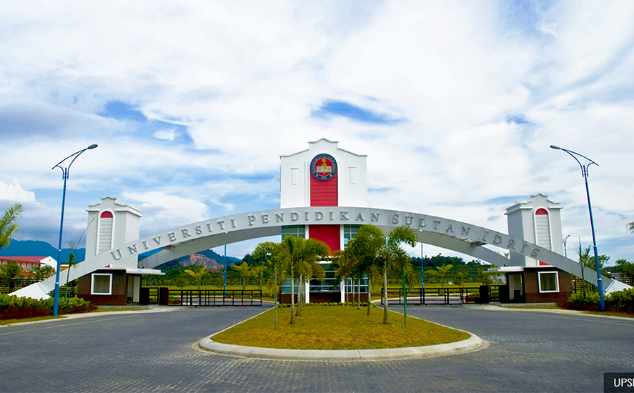
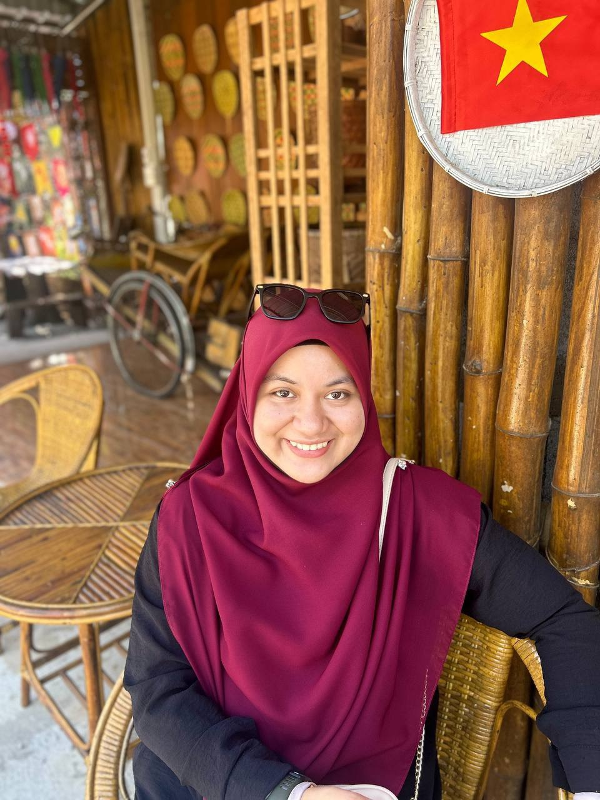
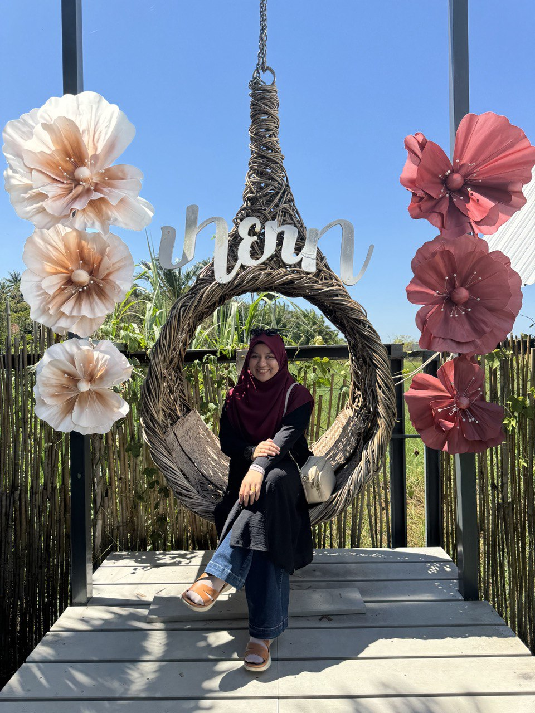

About Me
- Age: 29 years old
- Gender: Female
- Date of Birth: 28 July 1995
- Birthplace: Bachok, Kelantan
- Marital Status: Married
- Spouse Name: Mohd Asmadi bin Abdullah
- Nationality: Malaysia
- Race: Malay
- Religion: Islam
- Hobby: Travel and cafe hunting
- Email: 2022750321@student.uitm.edu.my
Education
-
SK Chantum (2002 - 2007)
Results: 4A, 1B (UPSR)
-
Sekolah Menengah Kebangsaan Bachok (2008 - 2012)
Pure Science - Results: 1A+, 2A, 2A-, 1B+, 1B, 2C+, 2C (SPM)
-
Kolej Matrikulasi Malaysia, Kolej MARA Kulim (2013 - 2014)
-
Universiti Pendidikan Sultan Idris (UPSI) (Nov 2018 - Jan 2021)
Diploma in Science (Mathematics) - Results: 3.27
-
University of Technology MARA (UiTM) (Mar 2022 - Present)
Bachelor of Business Administration (Hons.) Finance - Results: 3.25 (current CGPA)
Experience
-
NA Hani Resources (January 2021 - Present)
Freelancer for Property Management - Assisting with property-related matters.
-
Pejabat Tanah dan Jajahan Bachok (June 4, 2020 - July 31, 2020)
Internship - Placed in the Revenue Unit and assisted in Customer Service Management.
-
D' Yakin Maju Trading (January 2018 - October 2018)
Shop Assistant/Sales - Assisted with stock management and shop items.
-
D'Pintu Corner (July 2015 - October 2015)
Part-time Waiter - Provided customer service and handled food orders.
Skills
Microsoft
Canva
SPSS
Family
Family: My greatest joy and unwavering support.
MY SIBLINGS (5 GIRLS & 4 BOYS)
| NAME | BIRTHDAY | OCCUPATION | MARITAL STATUS |
|---|---|---|---|
| MOHD ALQARNAINI BIN ALIAS | 20TH MARCH 1986 | SELF-EMPLOYED | MARRIED |
| MOHD HAFIZUL ALIM BIN ALIAS | 23RD MAY 1987 | SELF-EMPLOYED | MARRIED |
| UMMUHUZAINAB BINTI ALIAS | 1ST APRIL 1989 | BAKER'S | MARRIED |
| MOHAMAD HAFIZALLULLAH BIN ALIAS | 26TH JULY 1991 | TEACHER | MARRIED |
| SHARIFAH DIDIE ALINA BINTI ALIAS | 12ND OCTOBER 1993 | BUSSINESSWOMAN | WIDOW |
| NUUR ASMAHANI BINTI ALIAS | 28 JULY 1995 | FREELANCER | MARRIED |
| SITI ZULAIHA BINTI ALIAS | 27TH APRIL 1997 | TEACHER | SINGLE |
| MOHAMAD FIRDAUS BIN ALIAS | 13 JUNE 1999 | SELF-EMPLOYED | MARRIED |
| MOHAMAD HAFIZALLULLAH BIN ALIAS | 26 JULY 1991 | ASSISTANT ACCOUNTANT | MARRIED |
Travelling Highlights


Contact
You can reach me at 2022750321@student.uitm.edu.my.